Overview
In this project, we added additional features to our pathtracer program from Project 3-1. We decided to do Parts 1 and 2, since they seemed interesting to us.In part 1, we implemented a glass material and mirror material / BSDF. To do this, we had to code reflection and refraction algorithms, which required us to understand Snell's law, the Fresnel equation, and Schlick's approximation. With this done, we could render scene containing mirror and glass materials, allowing for more advanced effects to be rendered in our environments.
In part 2, we implemented the microfacet model, allowing us to model items and objects with rough surfaces that still reflect light. To do this, we used the Beckmann distribution to as our NDF to define how to distribute the microfacets' normals. Then, we implemented the Fresnel term for reflection on dielectric-conductor interfaces using an approximation. Finally, we changed the initial cosine hemisphere sampling implementation which was not suitable for our Beckmann distribution to use importance sampling.
The result is additions to our pathtracer tool from last part that allows us to visualize more advanced effects like mirror and glass materials and the microfacet model. This allows us to model these materials in different environments, as well as create our own .dae files with custom parameters for real-life materials. This tool was helpful for visualizing the different advanced effects explained in lecture, and implementing them helped us understand these models and algorithms in a concrete way, which was definitely very helpful for improving our understanding of how each these advanced effects work.
Part 1. Mirror and Glass Materials
Show a sequence of six images of scene `CBspheres.dae` rendered with `max_ray_depth` set to 0, 1, 2, 3, 4, 5, and 100. The other settings should be at least 64 samples per pixel and 4 samples per light. Make sure to include all screenshots.

|
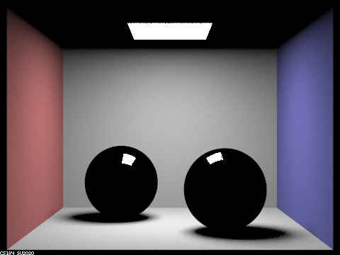
|
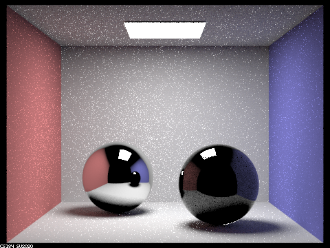
|
|
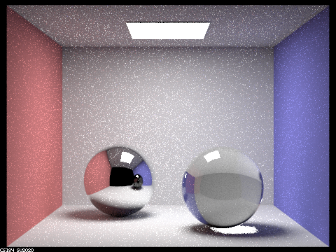
|
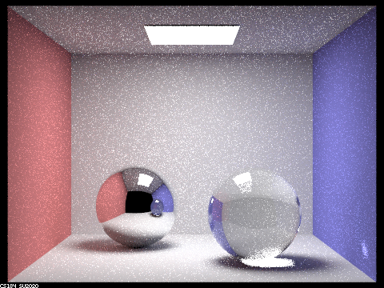
|
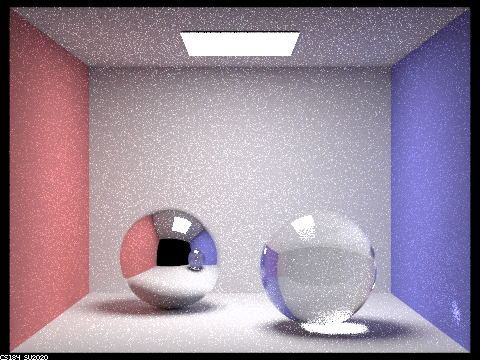
|
|
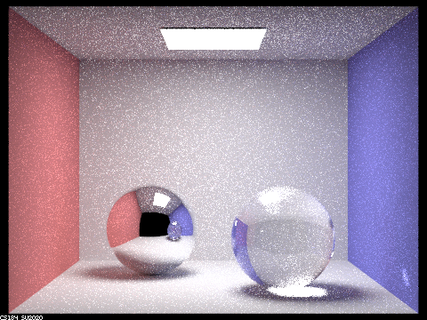
|
Point out the new multibounce effects that appear in each image.
With max_ray_depth = 0, no light bounces occur, so the only thing visible in the image is the light at the top of the environment. With max_ray_depth = 1, we get one bounce of light, which lets us see the room and the two spheres directly illuminated by the light.
With max_ray_depth = 2, we have enough bounces to start actually seeing the effects of the mirror and glass material spheres. The left sphere has a mirror material, so we can see the environment reflected on the sphere. However, since we only have one bounce to calculate this reflection, we can see that on the left sphere's mirror reflection, the right sphere is completely black (since after the reflection light bounce hits the right sphere, we have no more bounces left). On the right sphere, we begin to see the effects of the glass material refracting light, but most of the glass sphere is still dark since the max ray depth is still too low.
With max_ray_depth = 3, we can very visibly see the refraction of light from the glass sphere on the right. We can see that it refracts light from the environment, for example, the blue side of the room visible on the left side of the sphere. In addition, we see a large white shadow appear at the bottom of the right sphere due to the refraction of light. The left mirror sphere's reflection now doesn't show the right sphere as fully black anymore, since the extra bounce compared to last time allows the right sphere's light to bounce back.
With max_ray_depth = 4, we can better see the right sphere in the left sphere's reflection, appearing less dark and more clear. The right sphere also shows more light effects, for example, the area light at the top now shows up in more places on the sphere. We can also see a spot of light on the right blue wall coming from refraction from the right glass sphere.
With max_ray_depth = 5, the glass sphere on the right is brighter than before. This effect also appears in the left sphere's reflection of the right sphere.
With max_ray_depth = 100, not much has changed from the previous image, but the extra bounces make some parts of the scene light the glass sphere on the right slightly brigher than before.
Explain how these bounce numbers relate to the particular effects that appear. Make sure to include all screenshots.
As max_ray_depth increases, light can bounce more times around the scene, which makes some effects visible that are not possible.
In the left mirror sphere, we need at least two bounces of light (one to hit the sphere, another to reflect off the sphere) to show the effect of reflection. With only one bounce, light just hits the mirror sphere, and with no bounces, light doesn't even hit the sphere. So, starting at max_ray_depth = 2, we can see a reflection of the scene in the left mirror sphere. However, the more that light bounces around the scene, the more detailed the reflection can be since the bounces reach new targets. When the light reaches new targets, this light can add to the reflection on the sphere according to the reflection equation. So, a high max_ray_depth allows the reflection on the left mirror sphere to show more effects from its environment, including for example, the effects of the sphere on the right.
For the sphere on the right, a higher max_ray_depth means that light bounces more, and that bouncing light can hit the glass sphere. This means that there is more light hitting the glass sphere, which is then refracted because of its glass material. So, as the bounce number increases, more light bounces hit the glass sphere, refracting more light. One visible effect of this is that it makes the sphere brighter, which is why as max_ray_depth increases, the right sphere becomes noticeably brighter inside. We can also see this effect on the blue wall to the right of the sphere, since at lower max ray depths (below max_ray_depth = 4), not enough light refracts from the sphere to reach that point, making it not illuminated.
Part 2. Microfacet Material
Show a screenshot sequence of 4 images of scene `CBdragon_microfacet_au.dae` rendered with $\alpha$ set to 0.005, 0.05, 0.25 and 0.5. The other settings should be at least 128 samples per pixel and 1 samples per light. The number of bounces should be at least 5. Describe the differences between different images. Note that, to change the $\alpha$, just open the .dae file and search for `microfacet`.
|
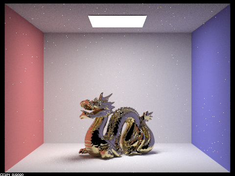
|
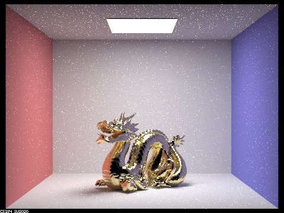
|
|
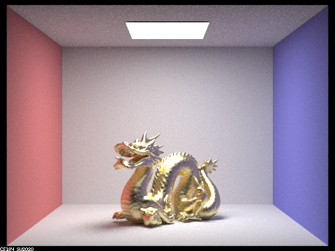
|
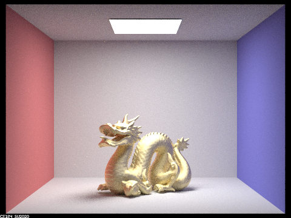
|
Going from low alpha values to high alpha values, the perceived brightness and "polish" of the material changes drastically. At alpha = 0.005, the dragon's surface appears very liquid-like/glossy (this is what is meant here by "polish"), and also appears much darker than the others due to that. Going to alpha = 0.05, it appears noticeably brighter, and it looks as if some areas of the dragon's surface are reflecting light more compared to the 0.005 case. Likewise, it also appears less glossy. Going to alpha = 0.25, there is once again a dramatic jump in brightness, with more of the golden color being present in exchange for less glossiness. There are still areas that appear more reflective. At alpha = 0.5, the surface of the dragon looks pretty much entirely a solid, "coarse" (not glossy) gold, and hardly any area bears the liquid-like reflective resemblance from smaller alpha values.
Show two images of scene `CBbunny_microfacet_cu.dae` rendered using cosine hemisphere sampling (default) and your importance sampling. The sampling rate should be fixed at 64 samples per pixel and 1 samples per light. The number of bounces should be at least 5. Briefly discuss their difference.
|
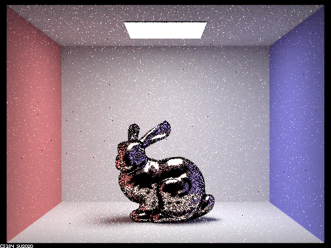
|
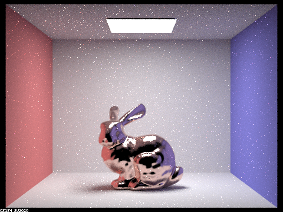
|
From the above images, we can see that hemisphere sampling has much more dark patches all over the bunny, being more apparently in contrast with importance sampling around the outline of the bunny. For instance, the outline of the bunny's leg is noticeably darker, in an unnatural-looking way; rather than looking dark due to extra soft-shadowing, it appears as if hemisphere sampling just left black patches along the bunny's leg (and other areas of interest). Hemisphere sampling also just has a lot of dark pixels littered all across the bunny. In contrast, the importance sampled bunny has much more consistent and brighter-appearing features across its entirety.
Show at least one image with some other conductor material, replacing `eta` and `k`. Note that you should look up values for real data rather than modifying them arbitrarily. Tell us what kind of material your parameters correspond to.
|
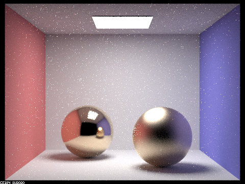
|
For this image, we used a copper material, with the parameters: eta: 0.35857 0.68384 1.2613 k: 3.2419 2.6166 2.2880